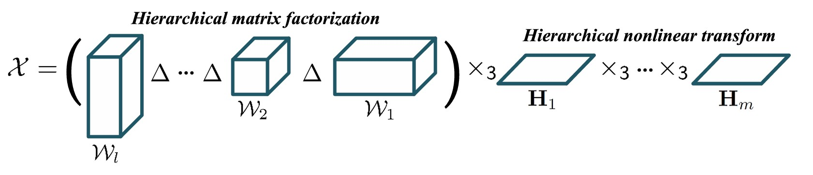
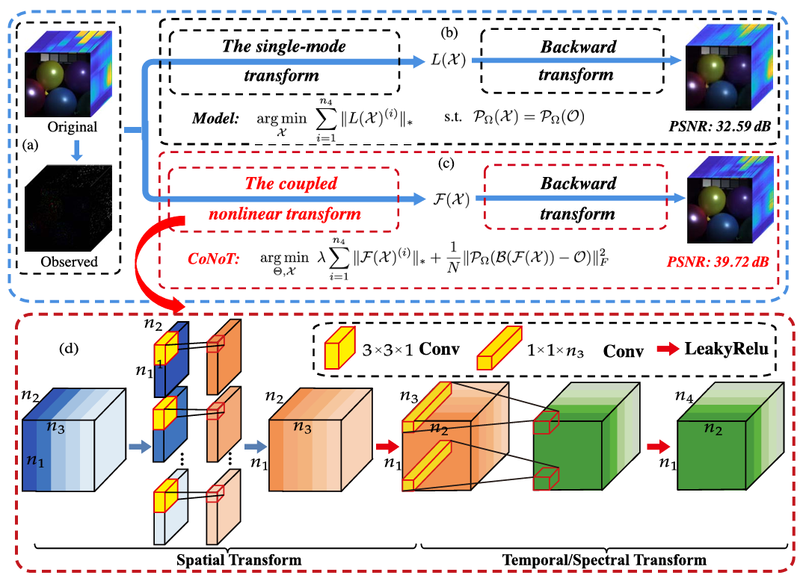

|
|
Jianli Wang（王检利）
School of Computing and Artificial Intelligence, Southwest Jiaotong University, Chengdu, China
Email: wangjianli_123@163.com wangjianli@swjtu.edu.cn
[Google Scholar]
[Github]
[ResearchGate]
|
课题组欢迎感兴趣的同学加入科研团队：
招收对象
- 本科生：大二大三优先
- 研究生：硕士研究生（欢迎有一定编程能力和数学功底的同学）
- 研究人员：全职/兼职研究助理
基本要求
- 学术素养：较强的科研内驱力与创新能力
- 技术基础：有编程能力与一定的数学功底
- 研究方向：图像/视频处理
Biography
I am currently working with the School of Computing and Artificial Intelligence, Southwest Jiaotong University, Chengdu, China. I received the Ph.D. degree (advised by Ting-Zhu Huang) from the School of Mathematical Sciences, University of Electronic Science and Technology of China, Chengdu, China, in 2022. My current research interests include tensor modeling and computing, high-dimensional image processing, computer vision, and deep learning.
Research Interest
I work in the field of computer science and technology, with a specific focus on advancing methodologies for computational vision and intelligent image analysis. My research bridges tensor modeling, high-performance computing, and multimodal learning to address challenges in large-scale visual data processing and restoration. Currently, I explore hybrid frameworks that integrate physics-driven models with data-driven AI techniques to achieve robust, scalable, and interpretable solutions for complex imaging tasks.
My recent work centers on the following themes：
- Efficient Image Reconstruction with Deep Priors
- Cloud Removal in Remote Sensing Images
- Unsupervised Image Deblurring with Uncertainty Modeling
- Advanced Denoising Techniques for Hyperspectral Images
News
- 2024.7.1: Two papers has been accepted by European Conference on Computer Vision (ECCV) 2024.
- 2024.1.11: One paper "Snapshot Compressive Imaging Using Domain-Factorized Deep Video Prior" has been accepted by IEEE Transactions on Computational Imaging.
- 2023.7.11: One paper "Unsupervised Domain Factorization Network for Thick Cloud Removal of Multi-temporal Remotely Sensed Images" has been accepted by IEEE Transactions on Geoscience and Remote Sensing.
Publications
2024
 |
Functional Transform-Based Low-Rank Tensor Factorization forMulti-dimensional Data Recovery
Jian-Li Wang*, Xi-Le Zhao
European Conference on Computer Vision, 2024.
[PDF]
|
 |
Superpixel-Informed Implicit Neural Representationor ulti-dimensional Data
Jia-Yi Li, Xi-Le Zhao, Jian-Li Wang*, Chao Wang, Min Wang
European Conference on Computer Vision, 2024.
[PDF]
|
 |
Hyperspectral Images Mixed Noise Removal via Group-Tube Transform Induced Collaborative Sparsity and Low-Rankness
Ben-Zhang Li, Teng-Yu Ji, Jian-Li Wang*
IEEE International Geoscience and Remote Sensing Symposium., 2024.
[PDF]
|
 |
Hyperspectral Image Denoising via Generalized Kronecker Decomposition-Based Subspace Representation
Wei-Hao Wu, Ting-Zhu Huang, Min Wang, Yong Chen, Jian-Li Wang*, Zhi-Long Han, Jia-Yi Li
IEEE International Geoscience and Remote Sensing Symposium, 2024.
[PDF]
|
 |
Snapshot Compressive Imaging Using Domain-Factorized Deep Video Prior
Yu-Chun Miao, Xi-Le Zhao, Jian-Li Wang*, Xiao Fu, Yao Wang
IEEE Transactions on Computational Imaging, 2024.
[PDF]
|
2023
 |
Unsupervised Domain Factorization Network for Thick Cloud Removal of Multi-temporal Remotely Sensed Images
Jian-Li Wang*, Xi-Le Zhao, Heng-Chao Li, Ke-Xiang Cao, Jiaqing Miao
IEEE Transactions on Geoscience and Remote Sensing, 2023.
[PDF]
|
 |
Uncertainty-Aware Unsupervised Image Deblurring With Deep Residual Prior
Xiaole Tang, Xile Zhao, Jun Liu, Jianli Wang*, Yuchun Miao, Tieyong Zeng
IEEE/CVF Conference on Computer Vision and Pattern Recognition (CVPR), 2023.
[PDF]
|
|  |
H2TF for Hyperspectral Image Denoising: Where Hierarchical Nonlinear Transform Meets Hierarchical Matrix Factorization
Jia-Yi Li, Jin-Yu Xie, Yi-Si Luo, Xi-Le Zhao, Jianli Wang*
IEEE Geoscience and Remote Sensing Letters, 2023.
[PDF]
|
2022
|  |
CoNoT: Coupled Nonlinear Transform-Based Low-Rank Tensor Representation for Multidimensional Image Completion
Jianli Wang*, Ting-Zhu Huang, Xi-Le Zhao, Yi-Si Luo
IEEE Transactions on Neural Networks and Learning Systems, 2022.
[PDF]
|
| |
Complex Video Completion Fusing Low-Rank Background and Deep Foreground Priors
Jianli Wang*, Ting-Zhu Huang, Xi-Le Zhao, Yu-Chun Miao
IEEE Signal Processing Letters, 2022.
[PDF]
|
 |
Hyperspectral Image Denoising via Tensor Low-Rank Prior and Unsupervised Deep Spatial-Spectral Prior
Wei-Hao Wu, Ting-Zhu Huang, Xi-Le Zhao, Jianli Wang*, Yu-Bang Zheng,
IEEE Transactions on Geoscience and Remote Sensing, 2022.
[PDF]
|
 |
Hyperspectral Denoising Using Unsupervised Disentangled Spatio-Spectral Deep Priors
Yu-Chun Miao, Xi-Le Zhao, Xiao Fu, Jianli Wang*, Yu-Bang Zheng
IEEE Transactions on Geoscience and Remote Sensing (ICCVW), 2022.
[PDF]
|
2021
 |
Multi-Dimensional Visual Data Completion via Low-Rank Tensor Representation Under Coupled Transform
Jianli Wang*, Ting-Zhu Huang, Xi-Le Zhao, Tai-Xiang Jiang, Michael K. Ng
IEEE Transactions on Image Processing, 2021.
[PDF]
[Poster]
|
, 2021,.png) |
Hyperspectral Denoising via Global Tensor Ring Decomposition and Local Unsupervised Deep Image Prior
Jianli Wang*, Ting-Zhu Huang, Xi-Le Zhao, Teng-Yu Ji, Tai-Xiang Jiang
IEEE International Geoscience and Remote Sensing Symposium (IGARSS) (ICCV), 2021.
[PDF]
|
 |
Tensor Completion via Collaborative Sparse and Low-Rank Transforms
Ben-Zheng Li, Xi-Le Zhao, Jianli Wang*, Yong Chen, Tai-Xiang Jiang, Jun liu
IIEEE Transactions on Computational Imaging , 2021.
[PDF]
|
2019
 |
Reweighted Block Sparsity Regularization for Remote Sensing Images Destriping
Jianli Wang*, Ting-Zhu Huang, Xi-Le Zhao, Jie Huang, Tian-Hui Ma, Yu-Bang Zheng
IEEE Journal of Selected Topics in Applied Earth Observations and Remote Sensing (ICCV), 2019.
[PDF]
[Code]
|
 |
A Sheared Low-Rank Model for Oblique Stripe Removal
Jianli Wang*, Ting-Zhu Huang, Tian-Hui Ma, Xi-Le Zhao, Yong Chen
Applied Mathematics and Computation , 2019.
[PDF]
[Code]
|
Services
- IEEE Transactions on Image Processing (IEEE TIP), Reviewer
- IEEE Transactions on Neural Networks and Learning Systems (IEEE TNNLS), Reviewer
- IEEE Transactions on Geoscience and Remote Sensing (IEEE TGRS), Reviewer
- IEEE Transactions on Circuits and Systems for Video Technology (IEEE TCSVT), Reviewer
- IEEE Transactions on Computational Imaging (IEEE TCI), Reviewer
Educations
PhD students:
2019.09-2022.12:University of Electronic Science and Technology of China (UESTC); Ph. D. student in Applied Mathematics (Supervisor: Prof. Ting-Zhu Huang)
2017.09-2019.07:University of Electronic Science and Technology of China (UESTC); Ph. D. student in Applied Mathematics (Supervisor: Prof. Ting-Zhu Huang)
Master students:
- 2013.09-2017.07: Neijiang Normal University; Bachelor student in the School of Mathematical Sciences (Supervisor: Prof. Yongguo Shi)
Awards
- Academic Rookie (学术新秀), UESTC, 2021
- Special Postgraduate Scholarship of Science (理科特别奖学金), UESTC, 2019
Fundings
- National Natural Science Foundation of China, Youth Program, Principal Investigator (国家自然科学基金青年项目, 主持), 2024.01-2026.12
- National Natural Science Foundation of China, General Program, Principal Investigator (国家自然科学基金面上项目, 主持), 2019.01-2022.12
Academic Activities
- 10/2021: "Multi - Dimensional Visual Data Completion via Low - Rank Tensor Representation Under Coupled Transform", CSIAM 2021, Anhui, China, [Slide]
- 07/2021: "Hyperspectral Denoising Via Global Tensor Ring Decomposition and Local Unsupervised Deep Image Prior", IGARSS 2021, Online, [Slide]